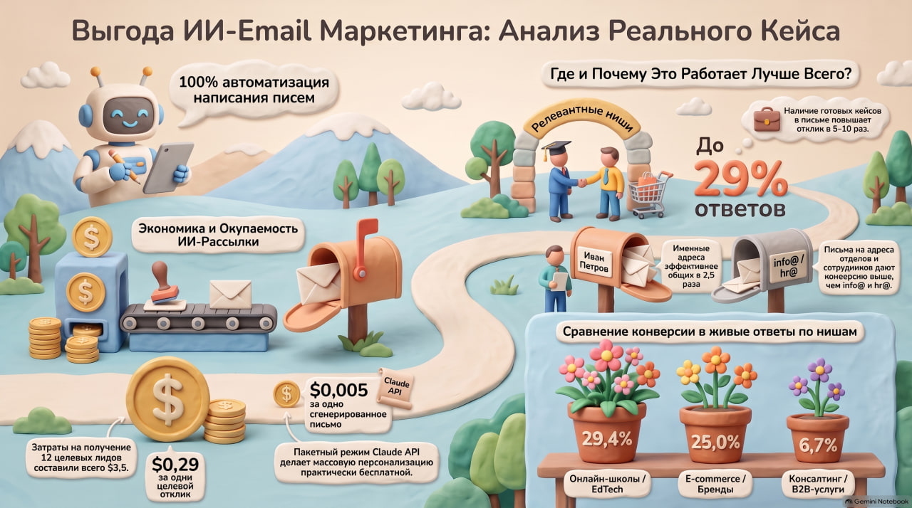

Почему массовые рассылки больше не работают
Одинаковый текст на сотни адресов получатель узнаёт сразу: обращение «Добрый день», общие слова про «комплексное продвижение», ни слова о его компании. Такое письмо не читают дальше первой строки, а почтовые сервисы всё чаще отправляют его в спам.
Причина та же, что у контента, который не листают: в нём нет крючка и нет ценности для конкретного человека.
Принцип: оффер на стыке задачи получателя и вашего опыта
Индивидуальный оффер — это не подстановка имени в шаблон. Это короткое письмо, где сходятся три вещи:
- Задача получателя — что ему нужно сейчас: вакансия, запуск нового ЖК, падение заявок, нехватка контента.
- Ваш опыт, который её решает — один-два кейса с цифрами, близкие по нише.
- Простой следующий шаг — короткий созвон, ответ одним словом, разбор их ситуации.
Всё остальное — лишнее. Чем короче письмо и чем точнее попадание в задачу, тем выше шанс ответа.
Как я собираю письмо: 5 шагов
Шаг 1. База, а не список адресов
Для каждого получателя собираю короткую карточку: компания, ниша, должность адресата, что у них сейчас происходит (новый проект, вакансия, активность в соцсетях), где заметна проблема. Без этой карточки индивидуального письма не получится.
Шаг 2. Находим задачу
Смотрю сайт, соцсети, текст вакансии или объявления. Ищу конкретику: какие площадки ведут, как быстро отвечают на заявку, что пишут в требованиях. Из этого формулирую одну задачу, с которой пойду в письмо.
Шаг 3. Пишем по анатомии «крючок — ценность — призыв»
Та же логика, что у продающей карусели: первая строка цепляет их ситуацией, середина показывает решение и доказательство, финал предлагает один понятный шаг.
Пример структуры. «Увидела, что вы запускаете продажи нового ЖК и принимаете заявки через WhatsApp» → «У застройщиков ответ через 4 часа теряет до 40% вечерних заявок; бот отвечает за 30 секунд» → «Покажу на 20-минутном созвоне, как это выглядит на вашей заявке. Удобно в четверг?»
Шаг 4. Дожим: второй шанс
Большинство ответов приходит не на первое письмо. Через 3–4 дня — короткое второе касание с новой пользой: кейс, расчёт, идея под их проект. Ещё через неделю — финальное, без давления. Каждое следующее письмо — не «напоминаю о себе», а новая причина ответить.
Шаг 5. Учёт в CRM
Каждый контакт — в таблице или CRM: кому писала, когда, какой оффер, ответил ли, следующий шаг. Без этого через неделю невозможно понять, какие офферы работают, и дожимы теряются.
Где помогает ИИ, а где нужен человек
Вручную такое письмо занимает 20–30 минут: изучить компанию, найти задачу, подобрать кейс, написать. Сотню писем так не напишешь. Но и отдать всё нейросети нельзя — получается пустой гладкий текст, который выдаёт себя с первой строки.
Я работаю так: ИИ (Claude) собирает карточку получателя, находит задачу и пишет черновик на стыке их запроса и моего опыта — с моими реальными цифрами. Я вычитываю каждое письмо и подтверждаю отправку. Письмо пишется за 3–5 минут, а звучит как написанное человеком, потому что каждое проходит через меня.
- ИИ: исследование получателя, черновик, адаптация кейса под нишу, варианты темы письма.
- Человек: выбор оффера, проверка фактов, финальная правка тона, решение «отправлять или нет».

Выгода ИИ-email маркетинга: экономика рассылки и конверсия в живые ответы по нишам
Мои кейсы
Кейс 1. Оффер застройщику в Алматы
Я отправила индивидуальное предложение о сотрудничестве компаниям Алматы — с разбором их ситуации и кейсами под нишу. Руководитель маркетинга одного из застройщиков ответил, и отдел маркетинга заинтересовался сразу тремя услугами: ИИ-обработкой заявок, контент-заводом на ИИ и воронкой под конкретный ЖК. По каждой я подготовила отдельное коммерческое предложение с ценами и кейсами рынка.
Посмотреть одно из этих предложений: ИИ-обработка заявок →
Кейс 2. Отклики с индивидуальными письмами
Тот же подход я проверила на себе, откликаясь на вакансии маркетолога. Около 40 откликов — и под каждый отдельное сопроводительное письмо: комбинация того, что ищет работодатель, и моего опыта, адаптированного под их запрос, кратко и с цифрами. Работодатели сами писали и звали на собеседования, в том числе на позицию Head of Growth.
Главный вывод из обоих кейсов: отвечают не на красивый текст, а на точное попадание в задачу. Письмо, где видно «я понял, что вам нужно, и вот доказательство, что умею это решать», выигрывает у любого шаблона.
Чек-лист перед отправкой
- В первой строке — их ситуация, а не рассказ о себе.
- Одна задача и одно решение, без списка всех услуг.
- Есть кейс с цифрами из похожей ниши.
- Один простой следующий шаг.
- Письмо читается за 30 секунд.
- Запланированы 2 дожимных касания с новой пользой.
- Контакт записан в CRM со статусом и датой следующего шага.
- Технически: домен с настроенными SPF и DKIM, отправка небольшими партиями, без вложений в первом письме.
Нужна рассылка с индивидуальными офферами?
Соберу базу, напишу письма под каждого получателя, настрою дожим в email, WhatsApp или Telegram и отчёт в CRM.
Обсудить в Telegram →